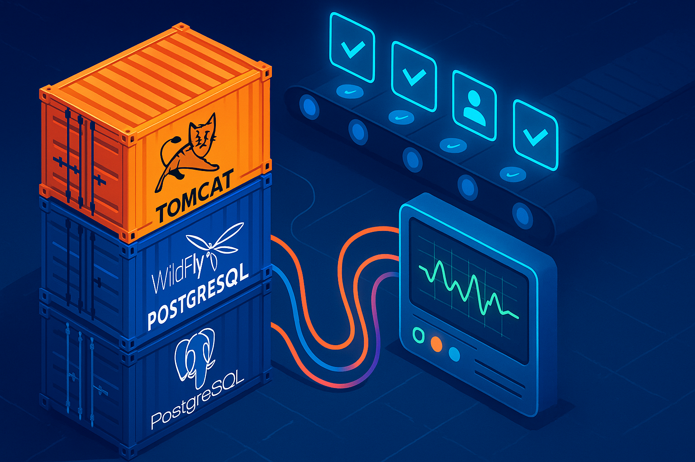

Containers em sincronia: a fase 2d que unificou build, deploy e testes

Compose orquestrando Tomcat, WildFly e PostgreSQL com saúde monitorada minuto a minuto.
Quando publicamos o primeiro capítulo desta série, nossa missão era encurtar o caminho entre "compilei" e "provei que funciona". Na semana passada, o time se reuniu em uma sala cheia de post-its e gráficos de execução do main.py. Sobre a mesa, fichas amarelas marcavam os pontos de atrito: resets de ambiente demorados, diferenças entre máquinas e logs difíceis de comparar.
"Se a gente leva quatro cliques para chegar ao primeiro login, estamos perdendo tempo que deveria estar com o cliente", disse Ana, a desenvolvedora responsável pela camada web. Bruno, do time de SRE, retrucou: "Enquanto dependermos de instalar Tomcat e WildFly localmente, cada computador vai contar uma história diferente". A frase virou gatilho. Decidimos sair dali apenas quando o fluxo fosse container-first, previsível e documentado.
Hoje avançamos mais um marco: a fase 2d levou tudo para contêineres, sem perder a previsibilidade conquistada. O resultado é um fluxo repetível que recompila, sobe Tomcat e WildFly pelo Docker Compose, realiza smoke tests, autentica na aplicação e executa a suíte Python — tudo com um único comando.
Por que migrar para o modo container-first
- Ambientes padronizados: a mesma imagem roda na máquina de desenvolvimento e na esteira, evitando divergências de biblioteca ou JDK.
- Provisionamento em minutos:
docker compose up --build tomcat wildflyentrega banco + servidores configurados e com healthcheck ativo. - Automação completa: a opção 12 do
main.pyagora se encarrega de reconstruir imagens, validar credenciais e rodar testes sem intervenção manual.
Como construímos esta etapa
Começamos com um quadro kanban dividido em três colunas: "Empilhar containers", "Validar saúde" e "Provar com testes". Cada cartão representava uma dor real do time. O objetivo era transformar aquela paisagem manual em uma sequência automatizada. Enquanto Bruno revisava permissões nos Dockerfiles, Lara desenvolvia o setenv.sh para injetar as propriedades certas sem expor segredos. Ao mesmo tempo, Ana revia os smoke tests para garantir que, mesmo rodando dentro do container, eles refletissem a experiência real de login.
Algumas decisões nasceram de tentativas e erros. Na primeira versão, o WildFly demorava dois minutos para entrar em estado saudável; descobrimos que a ordem dos builds no Compose estava drenando recursos e reescrevemos as camadas. Na segunda rodada, os smoke tests rodaram rápido demais e não capturaram a resposta do login. Ajustamos para esperar o HTTP 302 completo e validar o redirect para o dashboard. Cada ajuste entrava no README e no checklist, criando uma narrativa viva que qualquer pessoa do time poderia seguir.
O que ficou pronto
- Dockerfiles revisados: Tomcat e WildFly recompilam o WAR, embutem driver PostgreSQL e aplicam permissões corretas durante o build.
- Configuração inteligente de datasource:
docker/tomcat/setenv.shinjeta propriedadesapp.db.*, e ocontext.xmlconsome essas variáveis sem duplicar segredos. - Pipeline Compose saudável:
docker compose down --remove-orphanslimpa o ambiente,docker compose up --buildsobedatabase,tomcatewildflycom healthchecks automáticos. - Smoke tests dentro dos contêineres: verificamos
pg_isreadye o acesso a/caracore-hub/loginviacurlinterno antes de seguir. - Validação real de login: o script autentica como
admin@meuapp.comnos dois servidores e esperaHTTP 302para/caracore-hub/dashboard. - Testes Python em duplicata:
pytest tests/fase_01roda contra o Tomcat (porta 9090) e repete contra o WildFly (porta 8080), garantindo que ambos servem a mesma experiência. - Documentação e checklist atualizados: README, RESULTADOS-TESTES e checklist registram logs, passos e evidências da fase 2d.
Bastidores e evidências do fluxo em 18/10/2025
Na manhã de sábado, rodamos a opção 12 com todos acompanhando os logs em tempo real. A cada mensagem "healthy" que surgia, alguém celebrava no chat do time. Quando o login automático retornou HTTP 302, a sensação foi de assistir a um show de mágica sabendo exatamente como o truque funciona — segurança com um toque de encantamento.
mvn clean package -DskipTestsgera ocaracore-hub.war.- Compose recompila as imagens
caracore-hub/database:fase-2d,caracore-hub/tomcat:fase-2decaracore-hub/wildfly:fase-2d. - Healthchecks reportam os três serviços como healthy em menos de 40 segundos.
- Logins automáticos retornam
HTTP 302e redirecionam para o dashboard nos dois servidores. - Todos os 9 cenários da suíte da fase 1 passam duas vezes (Tomcat e WildFly) em ~5,5 segundos no total.
- Removemos o campo
versiondodocker-compose.yml, eliminando o warning recorrente.
Como o time usa (e como se sente)
- Executar:
python .\main.py 12. - Acompanhar: logs detalhados mostram build, healthchecks, smoke tests e PyTest.
- Registrar: evidências são copiadas diretamente para o checklist e para o relatório de testes.
Opção 12 em ação: compile, suba contêineres, teste login e execute a suíte Python — tudo em uma tacada só.
O efeito colateral positivo foi emocional. O time conta que a rotina perdeu aquele suspense desconfortável de "será que vai subir?". No lugar disso, ganhou uma confiança quase coreografada: cada etapa aparece no log com clareza e permite que qualquer pessoa intervenha cedo, caso algo fuja do esperado.
Benefícios percebidos
- Confiança para evoluir: qualquer alteração de código ou infraestrutura passa automaticamente pelos mesmos testes.
- Diagnóstico mais curto: quando algo falha, sabemos se foi durante o build, na subida do container ou em um teste específico.
- Escalabilidade organizacional: novos integrantes do time entram rodando o mesmo script, sem "roteiros paralelos".
O que vem agora (fase 2d dividida em dois escopos)
1. Fundação técnica do conector Mercado Livre
- Cadastro seguro de credenciais, webhook com verificação de assinatura, outbox/worker idempotente.
- Atualização de pedidos/volumes diretamente a partir dos eventos.
- Testes automatizados cobrindo webhook e processamento assíncrono.
- Detalhado em
doc/fases/fase_02d_pendencias_01.md.
2. Experiência operacional e observabilidade
- Notificações "Pronto para retirada", reprocessamento manual e timeline de eventos.
- Métricas, logs mascarados e critérios formais de aceite da fase 2.
- Suíte de testes da fase 2 (notificações, métricas, reprocessamento) integrada ao pipeline.
- Detalhado em
doc/fases/fase_02d_pendencias_02.md.
Convite à ação
Se você precisa tornar sua esteira container-first com a mesma previsibilidade que alcançamos aqui, vamos conversar. Nosso objetivo segue firme: cada etapa deve ser acionada com um comando, gerar evidências claras e liberar as pessoas para focar no valor do produto.
Explore o código e acompanhe os próximos capítulos: https://github.com/chmulato/app_jakarta
Tags: #JakartaEE #Docker #DockerCompose #Tomcat #WildFly #Python #DevOps #Automation #PostgreSQL #Observability #MercadoLivre #Integration
Nota Importante: Este artigo apresenta uma história fictícia criada com propósito educativo e técnico. Embora os personagens e situações descritas sejam fictícios, os conceitos, desafios e soluções de containerização, Docker Compose e automação de pipelines apresentados são baseados em práticas reais utilizadas no mercado de desenvolvimento de software.